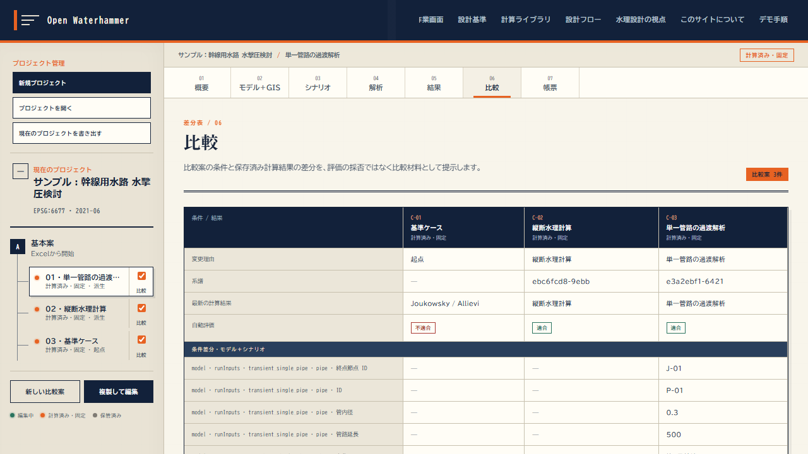

比較案を並べる
条件と結果の差分を、採否ではなく比較材料として出す。

計算に成功した比較案は固定され、条件を変えるには「複製して編集」で変更理由を残す。系譜と変更理由が残るので、なぜその条件にしたかが後から追える。
差分表は要約値だけを並べる。時系列や圧力包絡の格子点ごとの値は、結果タブの図に任せる。
条件と結果の差分を、採否ではなく比較材料として出す。

計算に成功した比較案は固定され、条件を変えるには「複製して編集」で変更理由を残す。系譜と変更理由が残るので、なぜその条件にしたかが後から追える。
差分表は要約値だけを並べる。時系列や圧力包絡の格子点ごとの値は、結果タブの図に任せる。